Генеральный директор — это руководитель, который отвечает за стратегическое развитие компании, управленческие решения и финансовые результаты бизнеса. Для таких специалистов важна профессиональная переподготовка и развитие управленческих компетенций, включая стратегическому менеджменту, финансовому планированию и корпоративному управлению. Сегодня востребованы дистанционные форматы обучения, позволяющие в удобном формате совмещать учебный процесс с работой. Онлайн курсы и дистанционные курсы переподготовки генеральных директоров включают практические задания, помогают освоить навыки эффективного руководства и повысить уровень профессиональных компетенций. По успешном завершении программы слушателям выдается диплом установленного образца, подтверждающий новую квалификацию. Мы составили рейтинг образовательных программ, где обучение проводится в дистанционном формате и предполагает прохождение обучения по ключевым аспектам управления и развития практических навыков.
Информация обновлена:
ТОП онлайн-курсов на генерального директора (CEO)
- 🏆 Генеральный директор — Академия Eduson (по промокоду kursy скидка 🎁 5%)
- 🏆 CEO Профессия Chief Executive Officer — Академия Eduson (по промокоду kursy скидка 🎁 5%)
- 🏆 Генеральный директор – Московская Бизнес Академия (по промокоду onlinekursy скидка 🎁 10%)
- Корпоративное управление и стратегическое развитие бизнеса – Московская Бизнес Академия (по промокоду onlinekursy скидка 🎁 10%)
- Эффективный руководитель: навыки, стратегии, управление — Московская Бизнес Академия (по промокоду onlinekursy скидка 🎁 10%)
- Генеральный директор — Русская Школа Управления
- Мини-MBA — ProductStar и РБК
- Управление изменениями: методы и инструменты для ТОП-менеджеров и собственников. Стратегия инновационного лидерства — Moscow Business School
- Собственник в роли генерального директора — совмещение функций владения и управления — Moscow Business School
- Успешный руководитель — эффективные подчиненные — Moscow Business School
- MBA General — City Business School
- Лидер 360° — Нетология
- Начинающий руководитель. Старт карьеры – Нетология
- Эффективный руководитель – Skillbox
- Директор по стратегическому развитию (620 часов) — АНО «НИИДПО»
- Директор по стратегическому развитию — Московский институт профессионального образования
- Директор (Генеральный директор) — Учебный центр «НЦПО»
Бесплатные курсы по обучению на CEO
- Бизнес-стратегия: практикум для предпринимателей, бесплатно – Skillbox
- Эффективное делегирование, бесплатно – GeekBrains
- Вводный курс MBA, бесплатно – City Business School
Отличительные преимущества каждой дистанционной программы обучения на генерального директора
| № | Курс и школа | Отличительные преимущества | |
|---|---|---|---|
| 🥇 | Генеральный директор — Академия Eduson | 219 видеоуроков, 36 кейсов, 23 тренажёра, бессрочный доступ к материалам, обучение у Давида Яна и Ицхака Адизеса. | Перейти |
| 🥈 | CEO Профессия Chief Executive Officer — Академия Eduson | Индивидуальные консультации, методика Гарварда, очные интенсивы в Москве, пожизненный доступ к материалам. | Перейти |
| 🥉 | Генеральный директор — Московская Бизнес Академия | 8 месяцев, модуль по искусственному интеллекту, карьерное сопровождение до трудоустройства, диплом с внесением в ФРДО. | Перейти |
| 4 | Корпоративное управление и стратегическое развитие бизнеса — Московская Бизнес Академия | 18 месяцев, международный диплом, более 60% выпускников получают повышение, сильный блок по цифровой трансформации. | Перейти |
| 5 | Эффективный руководитель: навыки, стратегии, управление — Московская Бизнес Академия | 1,5 месяца, обновлённая программа 2025 года, возврат денег в течение 14 дней, 70% практики. | Перейти |
| 6 | Генеральный директор — Русская Школа Управления | 5 месяцев интенсив, гибридные форматы (очно/онлайн), диплом с внесением в ФРДО, 70% практики. | Перейти |
| 7 | Мини-MBA — ProductStar | 71 урок, участие профессоров Гарварда и Стэнфорда, доступ к закрытому сообществу, ежегодное обновление программы. | Перейти |
| 8 | Управление изменениями — Moscow Business School | 5 дней интенсив, акцент на инновационное лидерство, очный и онлайн-форматы, 85% выпускников получают повышение. | Перейти |
| 9 | Собственник в роли генерального директора — Moscow Business School | Уникальный акцент на совмещении ролей владельца и директора, практические кейсы, корпоративный и индивидуальный форматы. | Перейти |
| 10 | Успешный руководитель — эффективные подчиненные — Moscow Business School | 3-дневный интенсив, акцент на командной мотивации и профилактике выгорания, документ MBS, 85% получают повышение. | Перейти |
| 11 | MBA General — City Business School | 1,5 года, российский и международный диплом MBA, рост дохода на 62% в процессе, гибкая рассрочка. | Перейти |
| 12 | Лидер 360° — Нетология | Корпоративное направление, SCORM-модули, бессрочный доступ при LMS компании, гибкая адаптация под бизнес-задачи. | Перейти |
| 13 | Начинающий руководитель. Старт карьеры — Нетология | 1–3 месяца, акцент на старте управленческой карьеры, современные инструменты (нейросети, Excel), карьерный план и комьюнити. | Перейти |
| 14 | Эффективный руководитель — Skillbox | 6 месяцев интенсив, портфолио проектов, поддержка карьерного центра до трудоустройства, сообщество руководителей. | Перейти |
| 15 | Директор по стратегическому развитию (620 часов) — АНО «НИИДПО» | 23 недели (620 часов), доступ к архиву 13 000+ вебинаров, мобильное приложение, диплом установленного образца. | Перейти |
| 16 | Директор по стратегическому развитию — МИПО | 690 часов за 8 месяцев, обучение у практиков (банки, госструктуры), диплом ФРДО, доступная стоимость. | Перейти |
| 17 | Директор (Генеральный директор) — НЦПО | Минимальная цена (от 3 900 ₽), ускоренная выдача удостоверения за 1 день, бессрочный доступ к материалам, индивидуальные сроки. | Перейти |
1. 🏆 Генеральный директор — Академия Eduson
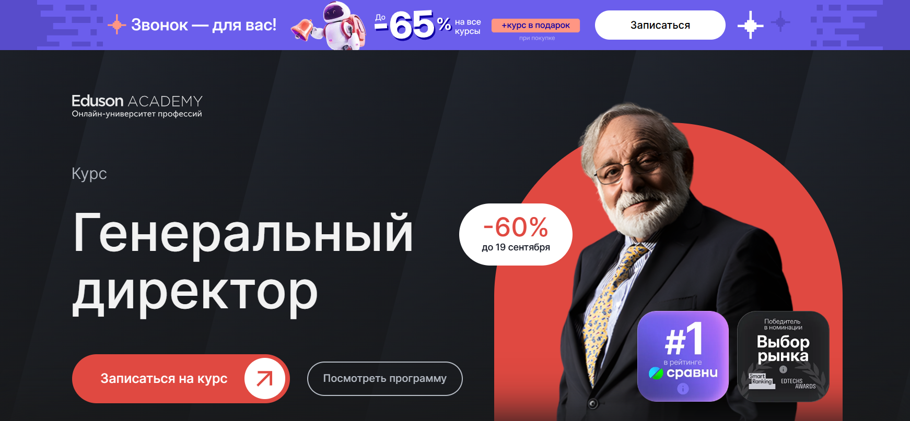- ✅ Официальный сайт: eduson.academy
- 💸 Цена обучения: 129 000 ₽ со скидкой 60%.
- 💳 Рассрочка: 10 750 ₽/мес - беспроцентная на 12 месяцев.
- 📚 Формат: дистанционный формат: 219 видеоуроков, практические задания, бизнес-кейсы, онлайн-тренажёры, тесты, обратная связь экспертов.
- ⏳ Продолжительность: обучение проходит в удобном ритме без дедлайнов.
- 📜 Документ: выдается диплом о профессиональной переподготовке и удостоверение о повышении квалификации.
- 📝 Трудоустройство: выпускники программы получают помощь в карьерном росте и применении новых управленческих компетенций.
- 🔷 Для кого подходит курс: для собственников бизнеса, генеральных директоров, топ-менеджеров, специалистов, желающих повысить квалификацию и развить управленческие навыки.
Особенности:
Обучение строится на практических кейсах и полностью адаптировано под дистанционный формат. Слушатели осваивают навыки стратегического менеджмента, финансового планирования и корпоративного управления. В программу включены 36 бизнес-кейсов и 23 тренажёра по управлению временем, Excel и unit-экономике. После успешного прохождения курса студенты получают официальный диплом установленного образца. Все материалы остаются доступны навсегда, включая обновления программы. Благодаря формату онлайн курсов участники могут совмещать процесс обучения с работой. Курс помогает развить управленческие компетенции и научиться принимать стратегические решения для роста бизнеса.
Чему учатся студенты:
- Созданию отдела продаж и выстраиванию бизнес-процессов
- Финансовому планированию и анализу отчётности
- Оптимизации операционного управления и логистики
- Формированию эффективных команд и корпоративной культуры
- Применению методов стратегического менеджмента и антикризисного управления
- Разработке маркетинговой стратегии и оценке инвестиционных проектов
Преподаватели:
- Ицхак Адизес — основатель Института Адизеса, входит в топ-10 консалтинговых компаний мира
- Леонид Осокин — генеральный директор Osokin-Consulting
- Максим Поташев — глава RP Consulting, магистр игры «Что? Где? Когда?»
- Кирилл Линник — консультант, более 160 реализованных проектов
- Азиза Улугова — заместитель финансового директора крупного медиа-холдинга
- Мария Зубарева — коммерческий директор UPMARKET
- Евгений Кромский — опыт работы в компаниях «Большой четверки»
- Оксана Дажун — официальный спикер Сколково, Альфа-Банка и Сбербанка
- Давид Ян — серийный предприниматель в сфере искусственного интеллекта
Преимущества:
- Дистанционное обучение без ограничений по срокам
- Обновления курса и доступ к материалам навсегда
- Практическая направленность: бизнес-кейсы, задания, тренажёры
- Поддержка кураторов и обратная связь от экспертов
- Диплом о профессиональной переподготовке установленного образца
- Возможность совмещать процесс обучения с карьерой
- Широкий выбор форматов обучения для развития управленческих навыков
Отзывы учеников:
Студенты отмечают удобный формат дистанционного обучения и высокий уровень преподавателей. Многие пишут о том, что программа помогла развить управленческие компетенции, научиться эффективному руководству и внедрить новые стратегии в бизнес. Среди плюсов чаще всего упоминают практические задания, доступность материалов, поддержку кураторов и полезность кейсов для работы.
Перейти на официальный сайт курса2. 🏆 CEO Профессия Chief Executive Officer — Академия Eduson
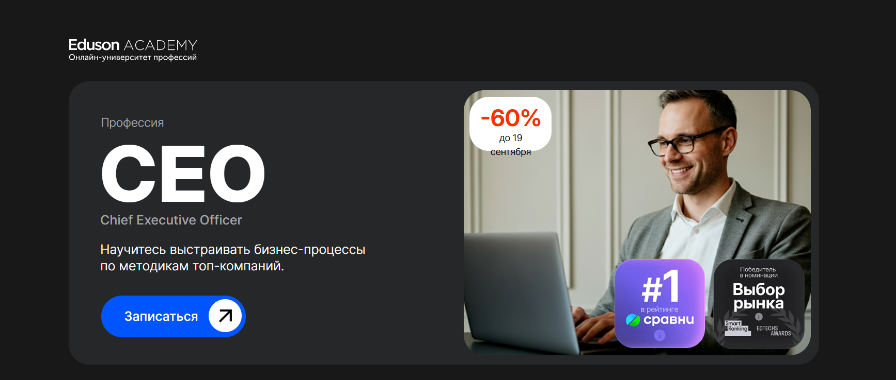- ✅ Официальный сайт: eduson.academy
- 💸 Цена обучения: 174 800 ₽ — со скидкой.
- 💳 Рассрочка: от 14 566 ₽/мес - беспроцентная до 12 месяцев.
- 📚 Формат: дистанционное обучение, видеолекции, практические задания, тесты, тренажёры, консультации, бизнес-разборы и очные интенсивы в Москве.
- ⏳ Продолжительность: обучение без строгих сроков, старт — 21 сентября.
- 📜 Документ: официальный диплом о профессиональной переподготовке установленного образца.
- 📝 Трудоустройство: выпускники повышают квалификацию, осваивают управленческие компетенции и готовятся к должности генерального директора.
- 🔷 Для кого подходит курс: руководителям, предпринимателям, владельцам бизнеса и специалистам, планирующим карьерный рост в управлении.
Особенности:
Программа создаёт условия для профессиональной переподготовки генеральных директоров и топ-менеджеров. Обучение проходит в удобном дистанционном формате и полностью ориентировано на практические навыки. Слушатели изучают стратегическое планирование, управление финансами и освоят методы анализа бизнес-процессов. В рамках курса предусмотрены индивидуальные консультации и кейсовая методика Гарварда. Студенты погружаются в моделирование процессов, учатся управлять рисками и принимать ключевые решения. Дополнительно доступны чек-листы, готовые шаблоны и пошаговые руководства. Весь учебный процесс построен на реальных бизнес-задачах и опыте ведущих экспертов. Выпускникам выдается диплом, подтверждающий профессиональную подготовку.
Чему учатся студенты:
- Стратегическому менеджменту и финансовому планированию
- Анализу отчетности и управлению рисками
- Развитию управленческих навыков и лидерских качеств
- Формированию эффективных команд и корпоративной культуры
- Оптимизации бизнес-процессов и операционному менеджменту
- Принятию стратегических решений и разработке бизнес-моделей
Преподаватели:
- Ицхак Адизес — основатель Института Адизеса, входит в топ-10 консалтинговых компаний мира
- Александр Голутвин — экс-генеральный директор DNS Development
- Максим Поташев — глава RP Consulting, магистр игры «Что? Где? Когда?»
- Иван Алёхин — основатель Al Business Technologies
- Павел Сивожелезов — владелец консалтинговой компании «Второй пилот»
- Ирина Егорова — опыт работы в IBM Global USA, Auchan, Metro Group
- Кирилл Линник — реализовал более 160 консалтинговых проектов
- Азиза Улугова — заместитель финансового директора крупного медиа-холдинга
- Оксана Дажун — официальный спикер Сколково, Альфа-банка и Сбербанка
- Давид Ян — серийный предприниматель в области искусственного интеллекта
Преимущества:
- Дистанционный формат обучения без строгих сроков
- Пожизненный доступ к материалам и обновлениям программы
- Обучение у топовых экспертов и действующих руководителей
- Индивидуальные консультации и бизнес-разборы
- Наличие очных интенсивов для живого общения и нетворкинга
- Диплом установленного образца для подтверждения квалификации
Отзывы учеников:
Студенты отмечают удобный формат занятий, насыщенную программу и практические кейсы. Чаще всего выделяют высокий уровень преподавателей, доступность материалов и полезные шаблоны для бизнеса. Также положительно отзываются о личных консультациях и возможности совмещать обучение с работой.
Перейти на официальный сайт курса3. 🏆 Генеральный директор – Московская Бизнес Академия

- ✅ Официальный сайт: moscow.mba
- 💸 Цена: от 116 500 ₽ со скидкой 50%.
- 💳 Рассрочка: от 4 854 ₽/мес до 36 месяцев без переплаты, первый платёж через месяц.
- 📚 Формат: дистанционный формат, видеолекции, тесты, практические задания, итоговый проект, доступ к дополнительным материалам.
- ⏳ Продолжительность: 8 месяцев.
- 📜 Документ: выдается диплом о профессиональной переподготовке, вносится в ФРДО, сертификат установленного образца.
- 📝 Трудоустройство: помощь с резюме, собеседованиями, формированием портфолио и подбором вакансий.
- 🔷 Для кого подходит курс: руководителям разных уровней, владельцам бизнеса и тем, кто хочет повысить управленческие компетенции.
Особенности:
Программа строится в удобном дистанционном формате обучения, что позволяет совмещать процесс получения знаний с основной работой. Слушатели получают доступ к образовательной платформе и учебным материалам в любое время. Учебный процесс включает стратегический менеджмент, финансовое планирование, антикризисное управление и развитие личной эффективности. По успешном завершении курса слушателям выдается официальный диплом, подтверждающий квалификацию. Выпускники смогут применять навыки эффективного управления в компаниях любого масштаба. Дополнительно предоставляется модуль по работе с искусственным интеллектом для управления проектами. После окончания обучения выпускники получают помощь в трудоустройстве и доступ к карьерному сопровождению.
Чему учатся студенты:
- Применять инструменты стратегического планирования и управления
- Управлять командой и развивать эффективные бизнес-коммуникации
- Использовать методы анализа данных для принятия управленческих решений
- Работать с финансовыми стратегиями и управлять рисками
- Оптимизировать бизнес-процессы с помощью современных инструментов
- Развивать навыки антикризисного управления
Преподаватели:
- Ицхак Пинтосевич — эксперт по личностному росту, бизнес-тренер, автор 15 книг
- Валерия Трофимова — практикующий экономист в ВТБ, аспирант Финансового университета
- Ангелина Шам — корпоративный бизнес-психолог, кандидат наук, автор книг по коммуникации
Преимущества:
- Полностью дистанционное обучение без отрыва от работы
- Программа соответствует современным требованиям рынка
- Доступ к лекциям и материалам из любой точки мира
- Выдается официальный диплом о профессиональной переподготовке
- Поддержка кураторов и обратная связь от преподавателей
- Карьерная помощь и сопровождение до успешного трудоустройства
Отзывы учеников:
Выпускники отмечают высокий уровень преподавателей и практическую направленность курса. Многие пишут, что обучение помогло систематизировать управленческие навыки, развить уверенность в принятии решений и освоить современные методы стратегического управления. Особенно положительно выделяют удобный формат дистанционных курсов и возможность совмещать учебу с бизнесом.
Перейти на официальный сайт курса4. Корпоративное управление и стратегическое развитие бизнеса – Московская Бизнес Академия
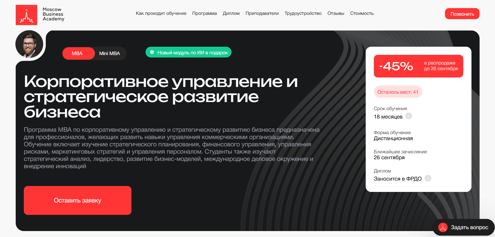- ✅ Официальный сайт: moscow.mba
- 💸 Цена обучения: полная стоимость — 313 500 ₽.
- 💳 Рассрочка: от 8 708 ₽ в месяц до 36 месяцев без переплат, первый платеж через месяц.
- 📚 Формат: дистанционный формат, видеолекции, практические задания, онлайн-вебинары, итоговый проект.
- ⏳ Продолжительность: 18 месяцев.
- 📜 Документ: выдается диплом международного образца с внесением в ФРДО.
- 📝 Трудоустройство: помощь в составлении резюме, прохождении собеседований, создании портфолио, поддержка в поиске клиентов.
- 🔷 Для кого подходит курс: руководителям, топ-менеджерам, бизнес-аналитикам, специалистам по стратегическому планированию и владельцам бизнеса.
Особенности:
Обучение проводится в полностью дистанционном формате с гибким графиком, что позволяет совмещать процесс обучения с работой. Учебный план регулярно обновляется и соответствует современным требованиям рынка. Студенты получают доступ к образовательной платформе с актуальными материалами курса и практическими кейсами. Программа направлена на развитие управленческих компетенций, стратегического мышления и освоение методов финансового планирования. Преподаватели — эксперты с большим практическим опытом, готовые делиться реальными инструментами управления. После успешного завершения обучения выпускники получают официальный диплом установленного образца. Академия сотрудничает с ведущими компаниями, что повышает шансы на трудоустройство. По статистике, более 60% выпускников программы продвигаются по карьерной лестнице.
Чему учатся студенты:
- Стратегическому менеджменту и планированию
- Финансовому менеджменту и анализу
- Управлению рисками и изменениями
- Антикризисному менеджменту
- Развитию лидерских качеств и управлению командами
- Современным стратегиям маркетинга
- Цифровой трансформации бизнеса
- Правовым основам корпоративной деятельности
Преподаватели:
- Ольга Ваганова: советник и руководитель практики семейного и наследственного права, опыт работы в сфере финансов более 10 лет.
- Оксана Малервейн: финансовый директор, эксперт-практик с опытом более 20 лет в крупных корпорациях.
- Ицхак Пинтосевич: бизнес-тренер, эксперт по личностному росту, автор 15 книг-тренингов.
Преимущества:
- Дистанционное обучение в удобном формате
- Доступ к материалам курса в любое время
- Преподаватели-практики из ведущих компаний
- Международный диплом установленного образца
- Фокус на практических заданиях и кейсах
- Карьерные консультации и помощь в трудоустройстве
- Рассрочка без переплат до 36 месяцев
Отзывы учеников:
Студенты отмечают доступность материалов курса, качественную работу преподавателей и кураторов. Многие подчеркивают, что полученные практические навыки можно сразу применять в работе. Выпускники положительно отзываются о карьерной поддержке и отмечают рост управленческих навыков после прохождения программы.
Перейти на официальный сайт курса5. Эффективный руководитель: навыки, стратегии, управление — Московская Бизнес Академия
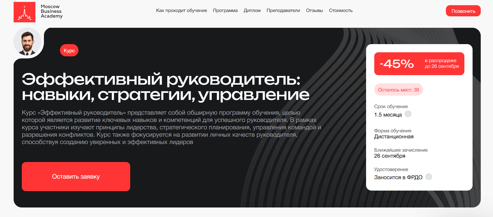- ✅ Официальный сайт: moscow.mba
- 💸 Цена обучения: 62 030 ₽ (со скидкой 45%).
- 💳 Рассрочка: 3 446 ₽ в месяц до 18 месяцев без переплаты, первый платеж через месяц.
- 📚 Формат: дистанционный формат, видеоматериалы, практические задания, проекты, обратная связь от преподавателей и кураторов.
- ⏳ Продолжительность: 1,5 месяца.
- 📜 Документ: удостоверение о повышении квалификации и сертификат установленного образца, информация вносится в ФРДО.
- 📝 Трудоустройство: выпускники программы отмечают, что 65% находят работу уже в течение 3 месяцев.
- 🔷 Для кого подходит курс: руководителям, топ-менеджерам, студентам и выпускникам, а также тем, кто планирует управленческую карьеру.
Особенности:
Программа ориентирована на развитие управленческих компетенций в дистанционном обучении с удобным форматом занятий. Обучение проходит полностью онлайн, что позволяет совмещать его с работой и личными делами. Слушатели осваивают стратегическому планированию, управлению командой и разрешению конфликтов. В процессе обучения предусмотрены практические задания, максимально приближенные к реальным бизнес-задачам. Учебный процесс включает доступ к актуальным материалам и обновленной программе 2025 года. После успешного прохождения слушателям выдается официальный диплом установленного образца. Программа рассчитана на генеральных директоров, финансовых менеджеров, коммерческих директоров и специалистов, желающих повысить квалификацию. Завершение курса гарантирует получение практических навыков и ключевых знаний для эффективного управления.
Чему учатся студенты:
- Принципам стратегического менеджмента и планирования
- Развитию лидерских качеств и управленческих компетенций
- Навыкам управления временем и персоналом
- Методам разрешения конфликтов и построения эффективных команд
- Финансовому планированию и анализу
- Принятию стратегических и управленческих решений
Преподаватели:
- Ангелина Шам — корпоративный бизнес-психолог, автор книг, кандидат наук МГУ, спикер Global Speakers Federation, имеет практический опыт в совете директоров крупной медицинской компании.
Преимущества:
- Удобный формат дистанционного образования с доступом к платформе 24/7
- Обновленная в 2025 году программа, соответствующая профессиональным стандартам
- Опытные преподаватели-практики с международным образованием
- Рассрочка без переплаты и возможность вернуть 13% налоговым вычетом
- 70% учебного процесса составляют практические кейсы и задания
- Гарантированный возврат стоимости в течение 14 дней после начала обучения
Отзывы учеников:
Студенты Московской Бизнес Академии отмечают доступность материалов, профессионализм преподавателей и практическую направленность занятий. Многие подчеркивают, что обучение проходит в удобном дистанционном формате, а полученные знания помогают повысить эффективность бизнеса и карьерные перспективы.
Перейти на официальный сайт курса6. Генеральный директор — Русская Школа Управления
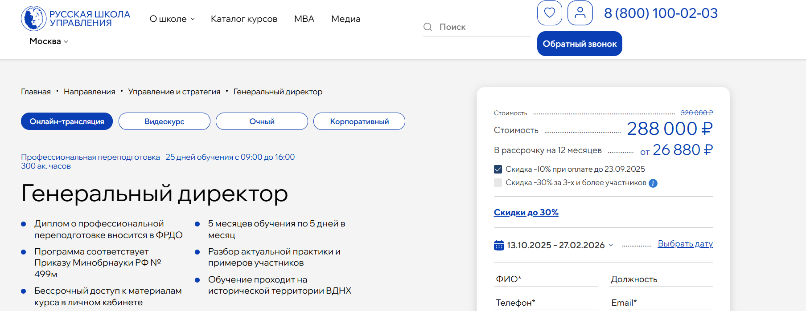- ✅ Официальный сайт: uprav.ru
- 💸 Цена: от 288 000 ₽ до 320 000 ₽ в зависимости от формата обучения.
- 💳 Рассрочка: от 26 880 ₽/мес доступна до 12 месяцев.
- 📚 Формат: онлайн-курсы, очные занятия, видеокурс, кейсы, практические задания, тесты, доступ к материалам в личном кабинете.
- ⏳ Продолжительность: 5 месяцев по 5 дней или индивидуальный график до 6 месяцев.
- 📜 Документ: выдается диплом о профессиональной переподготовке, внесенный в ФРДО.
- 📝 Трудоустройство: диплом соответствует государственным стандартам и повышает шансы карьерного роста.
- 🔷 Для кого подходит курс: для руководителей, специалистов и компаний, стремящихся к развитию управленческих компетенций.
Особенности:
Программа создана для подготовки к должности генерального директора и охватывает ключевые направления управления. Обучение проходит в дистанционном формате и на территории ВДНХ, что позволяет выбрать удобный вариант. Студенты получают практические навыки стратегического планирования, финансового менеджмента и управления персоналом. По завершении обучения слушателям предоставляется доступ к базе знаний и чек-листам. Программа сочетает разбор актуальных кейсов и работу с примерами участников. После успешного прохождения курса слушатель получает диплом установленного образца. Образовательная платформа поддерживает гибкие графики, а материалы курса доступны бессрочно. Это обучение помогает руководителям повышать квалификацию и формировать эффективные команды.
Чему учатся студенты:
- Разрабатывать стратегии и прогнозировать развитие компании
- Применять финансовое планирование и оптимизировать бюджеты
- Осваивать навыки управления персоналом и переговорами
- Управлять рисками и адаптироваться к условиям рынка
- Развивать лидерские качества, тайм-менеджмент и стресс-менеджмент
- Использовать цифровые инструменты и аналитику для управленческих решений
Преподаватели:
- Трушкин Сергей Юрьевич — преподаватель МВА РШУ, эксперт в цифровой трансформации, инженер системотехник.
- Бажанова Юлия Владимировна — руководитель IT-проектов, эксперт CDTO, ментор руководителей.
- Голещихин Николай Николаевич — специалист в антикризисном управлении и стратегии компании.
- Ефремова Елизавета Валериевна — преподаватель МВА РШУ, организационный психолог, эксперт по развитию персонала.
Преимущества:
- Гибкие форматы обучения: онлайн, очно или видеокурс
- Сильная практическая база — 70% занятий направлены на практику
- Преподаватели-практики с опытом работы в ведущих компаниях
- Доступ к образовательной платформе и материалам без ограничения по времени
- Возможность совмещать обучение с работой
- Индивидуальные графики для слушателей
Отзывы учеников:
Слушатели отмечают актуальность материала и практическую направленность занятий. Многие подчеркивают удобный формат обучения и возможность сразу применять знания в бизнесе. Преподаватели получают положительные отзывы за профессионализм и глубокую подачу материала. По итогам прохождения программы выпускники отмечают рост управленческих навыков и повышение карьерных перспектив.
Перейти на официальный сайт курса7. Мини-MBA — ProductStar и РБК
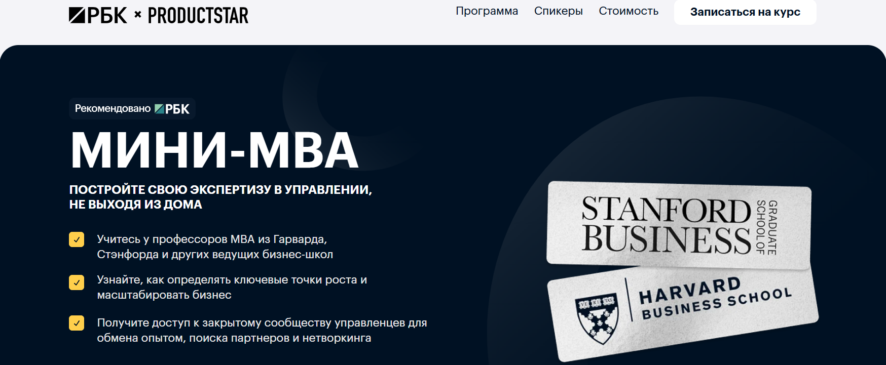- ✅ Официальный сайт: rbc.productstar.ru
- 💸 Цена: от 164 970 ₽ в зависимости от тарифа.
- 💳 Рассрочка: от 7 638 ₽/мес до 36 месяцев без переплат, есть оплата за счет компании.
- 📚 Формат: дистанционный формат, 71 урок, бизнес-семинары, групповые воркшопы, практические кейсы, доступ к сообществу.
- ⏳ Продолжительность: обучение проходит в удобном темпе, программа обновляется ежегодно.
- 📜 Документ: сертификат о завершении обучения (Standard) или диплом о профессиональной переподготовке (Premium).
- 📝 Трудоустройство: возможность карьерного роста, участие в сообществе управленцев, поддержка в развитии.
- 🔷 Для кого подходит курс: для руководителей, предпринимателей, генеральных директоров, финансовых директоров и специалистов, стремящихся повысить квалификацию.
Особенности:
Программа в дистанционном формате позволяет совмещать обучение с работой и личной жизнью. В курс включены теоретические модули, практические задания и живые семинары с экспертами. Слушатели получают доступ к закрытому сообществу управленцев, где можно обмениваться опытом и заводить деловые контакты. После успешного прохождения обучения выдается диплом установленного образца или сертификат. Студенты осваивают современные методы управления, стратегическое планирование и финансовый анализ. Форматы обучения предусматривают участие в онлайн-сессиях, практических занятиях и разборе реальных кейсов. Выпускники программы укрепляют управленческие компетенции и разовьют навыки эффективного руководства. Сроки обучения гибкие, а стоимость обучения доступна в рассрочку.
Чему учатся студенты:
- Принимать управленческие решения и работать с финансовым менеджментом
- Разрабатывать эффективные стратегии и управлять командой
- Понимать аспекты стратегического менеджмента и планирования
- Анализировать финансовые результаты и применять методы управления
- Развивать компетенции руководителя и управленческие навыки
Преподаватели:
- Лу Шипли — профессор Гарвардской школы бизнеса
- Игорь Селиванов — заместитель генерального директора РБК
- Лисен Стромберг — профессор бизнес-школы Стэнфорда
- Энтони Кнопперс — преподаватель Роттердамской школы менеджмента
- Моше Коэн — профессор бизнес-школы Квеструм, Бостонский университет
Преимущества:
- Дистанционные курсы с удобным форматом обучения
- Возможность получить диплом о профессиональной переподготовке
- Бизнес-семинары с ведущими управленцами и международными преподавателями
- Фирменный сертификат после окончания обучения
- Доступ к закрытому сообществу для нетворкинга
- Оплата в рассрочку без переплат и налоговый вычет 13%
- Программа соответствует профессиональным стандартам и обновляется ежегодно
Отзывы учеников:
Студенты отмечают, что обучение помогает развить управленческие компетенции и освоить навыки эффективного руководства. Выпускники рассказывают о карьерных изменениях, открытии новых филиалов и росте личной эффективности. Среди плюсов чаще всего выделяют удобный формат обучения, практические кейсы, опыт преподавателей и возможность общения с сообществом профессионалов.
Перейти на официальный сайт курса8. Управление изменениями: методы и инструменты для ТОП-менеджеров и собственников. Стратегия инновационного лидерства — Moscow Business School
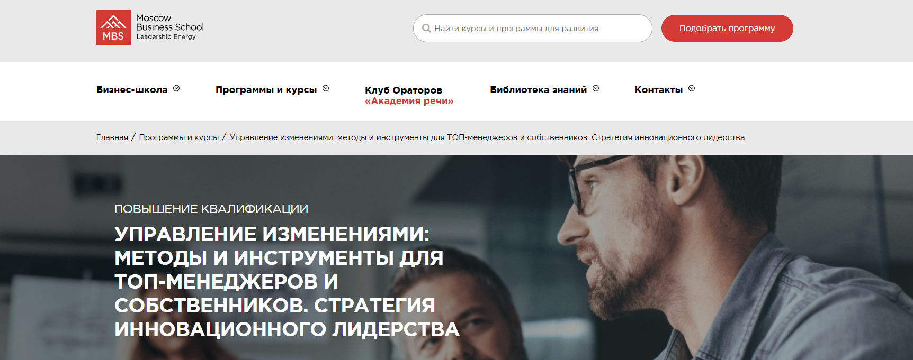- ✅ Официальный сайт: mbschool.ru
- 💸 Цена: 71 900 ₽.
- 💳 Рассрочка: предоставляется для физических и юридических лиц от 2 996 ₽/мес.
- 📚 Формат: очные занятия или дистанционный формат, практические кейсы, деловые игры, разбор ситуаций.
- ⏳ Продолжительность: 5 дней, с 10:00 до 17:30.
- 📜 Документ: удостоверение о повышении квалификации или сертификат MBS, официальный документ установленного образца.
- 📝 Трудоустройство: повышение управленческих компетенций, карьерный рост выпускников в течение года после успешного завершения.
- 🔷 Для кого подходит курс: генеральных директоров, собственников бизнеса, директоров по развитию, антикризисных менеджеров и руководителей.
Особенности:
Программа построена на практическом подходе и сочетает стратегическое планирование, анализ эффективности бизнеса и управление изменениями. Обучение проходит в удобном формате: очно или онлайн, что позволяет совмещать процесс обучения с рабочим графиком. Курс поможет развить управленческие навыки, освоить эффективные стратегии адаптации персонала и методы работы в условиях неопределенности. Особое внимание уделяется современным вызовам, включая трудоустройство сотрудников с военными травмами. Слушатели получают доступ к материалам курса и инструментам менеджмента, которые можно применять в реальной работе сразу после окончания обучения. Образовательная программа соответствует профессиональным стандартам и признана работодателями ведущих компаний.
Чему учатся студенты:
- Оценивать эффективность бизнеса и внедрять стратегические изменения
- Применять методы анализа и делегирования задач
- Разрабатывать планы внедрения изменений
- Использовать 17 ключей к развитию адаптивности руководителя
- Применять стратегии обучения и вовлечения персонала
- Управлять командой и контролировать результаты
Преподаватели:
- Наумов Дмитрий Анатольевич — кандидат технических наук, MBA, CDO российского вендора по аналитике процессов и роботизации RPA, эксперт по цифровой трансформации
- Иванова Марина Ивановна — MBA, эксперт-практик в управлении предприятиями, клинический медицинский психолог, специалист по корпоративной и социальной психологии
Преимущества:
- Гибкие форматы обучения: дистанционное и очное
- Официальные документы: удостоверение или сертификат MBS
- Карьерные перспективы: 85% выпускников получают повышение в течение года
- Практические задания и кейсы из реальной бизнес-практики
- Обучение ведут эксперты с многолетним опытом
- Доступ к материалам курса и дополнительным ресурсам
Отзывы учеников:
Выпускники отмечают высокий уровень организации обучения, доступную подачу материала и полезные практические занятия. Многие подчеркивают рост управленческих навыков и возможность быстро применять полученные знания в бизнесе. Среди плюсов выделяют профессионализм преподавателей и карьерные перспективы после прохождения программы.
Перейти на официальный сайт курса9. Собственник в роли генерального директора — совмещение функций владения и управления — Moscow Business School
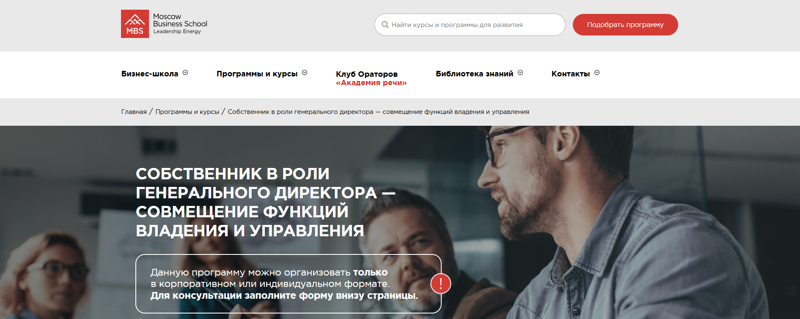- ✅ Официальный сайт: mbschool.ru
- 💸 Цена: уточняется у менеджера, возможны корпоративные условия.
- 💳 Рассрочка: предоставляется по запросу.
- 📚 Формат: корпоративное или индивидуальное обучение, лекции, практические кейсы, работа с примерами компаний.
- ⏳ Продолжительность: зависит от выбранного формата.
- 📜 Документ: удостоверение о повышении квалификации или сертификат Moscow Business School.
- 📝 Трудоустройство: рост управленческих компетенций и повышение карьерных возможностей.
- 🔷 Для кого подходит курс: владельцы бизнеса, генеральные директора, топ-менеджеры.
Особенности:
Программа обучает совмещать владельческие и управленческие функции, помогает освоить навыки эффективного взаимодействия с наемными менеджерами и разрабатывать стратегии передачи полномочий. Студенты изучают методики стратегического планирования и финансового менеджмента, учатся принимать управленческие решения на высоком уровне. Обучение направлено на развитие практических навыков, необходимых для управления компанией в конкурентных условиях. При успешном завершении курса участники получают официальный документ о квалификации. Обучение проводится с учетом современных методов корпоративного управления и требований профессиональных стандартов. Слушатели могут выбрать удобный формат занятий и адаптировать программу под свой график. Программа обеспечивает развитие управленческих компетенций и навыков эффективного руководства.
Чему учатся студенты:
- Разрабатывать стратегические и функциональные планы компании
- Совмещать функции собственника и генерального директора
- Эффективно делегировать полномочия менеджерам
- Формировать систему KPI и оценку управленческих решений
- Организовывать переход от прямого управления к контролю за наемным директором
- Изучать риски передачи бизнеса и способы их снижения
Преподаватели:
- Татьяна Чугунова — менеджер программы, консультант по вопросам корпоративного обучения.
Преимущества:
- Официальные сертификаты и удостоверения о повышении квалификации
- Корпоративный и индивидуальный формат обучения
- Практические задания, основанные на реальных бизнес-кейсах
- Гибкость программы и адаптация под график слушателя
- Развитие стратегических и управленческих навыков
- Подготовка к эффективной работе в роли генерального директора
Отзывы учеников:
Выпускники отмечают высокий профессионализм преподавателей и практическую направленность программы. Часто подчеркивается ценность реальных кейсов, удобный формат обучения и возможность применять полученные знания сразу в своем бизнесе. Многие указывают на карьерный рост и повышение эффективности управления после прохождения курса.
Перейти на официальный сайт курса10. Успешный руководитель — эффективные подчиненные — Moscow Business School
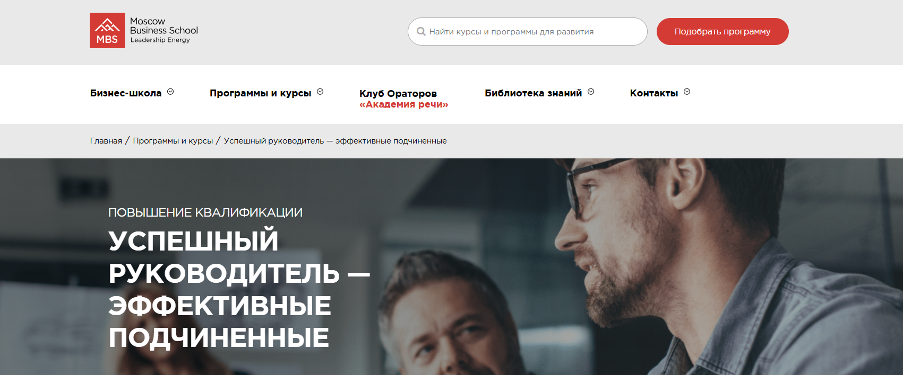- ✅ Официальный сайт: mbschool.ru
- 💸 Цена обучения: 55 900 ₽ (50 310 ₽ при оплате онлайн со скидкой 10%).
- 💳 Рассрочка: доступна от 2 329 ₽/мес, условия уточняются при регистрации.
- 📚 Формат: очное и онлайн обучение, практические кейсы, бизнес-тренажёр, интерактивные задания.
- ⏳ Продолжительность: 3 дня, ежедневно с 10:00 до 17:30.
- 📜 Документ: удостоверение о повышении квалификации или сертификат Moscow Business School.
- 📝 Трудоустройство: помогает в карьерном росте, 85% выпускников отмечают повышение в течение года.
- 🔷 Для кого подходит курс: для руководителей разного уровня, специалистов, владельцев бизнеса, менеджеров, желающих освоить управленческие навыки и повысить квалификацию.
Особенности:
Программа построена на активной работе с реальными кейсами и практическими заданиями, что позволяет участникам сразу применять полученные знания в своей деятельности. Обучение проходит в удобном формате: можно выбрать очное или дистанционное обучение. Студенты осваивают эффективные техники управления персоналом, учатся мотивировать сотрудников и работать с командой в стрессовых ситуациях. В процессе обучения уделяется внимание профилактике профессионального выгорания и развитию лидерских качеств. Каждый участник получает индивидуальные рекомендации и обратную связь от экспертов. По окончании обучения слушателям выдается официальный документ, подтверждающий квалификацию. Такой подход помогает выпускникам быстрее продвигаться по карьерной лестнице и развивать компетенции руководителя.
Чему учатся студенты:
- Оперативному управлению и делегированию задач
- Эффективной обратной связи и мотивации сотрудников
- Решению конфликтов и сопротивления в команде
- Диагностике и профилактике эмоционального выгорания
- Позитивному мышлению и дисциплине в работе
Преподаватели:
- Михайлов Дмитрий Юрьевич — MBA, бизнес-тренер, эксперт-практик в сфере продаж, переговоров и развития лидерства.
- Шутов Игорь Юрьевич — юрист, корпоративный психолог, эксперт по управлению конфликтами и кадровым рискам.
Преимущества:
- Совмещение очного и дистанционного форматов обучения
- Практические кейсы, приближенные к реальным рабочим ситуациям
- Документ установленного образца, признанный работодателями
- Карьерный рост: выпускники получают повышение в течение года
- Опытные преподаватели с более чем 5-летней практикой
- Гибкий график обучения: вечерние, выходные и интенсивные программы
Отзывы учеников:
Выпускники отмечают практическую направленность программы, удобный формат и полезность знаний для работы с подчиненными. Студенты подчеркивают профессионализм преподавателей, индивидуальный подход и ценность интерактивных занятий, которые помогают закрепить навыки эффективного управления и повысить квалификацию.
Перейти на официальный сайт курса11. MBA General — City Business School
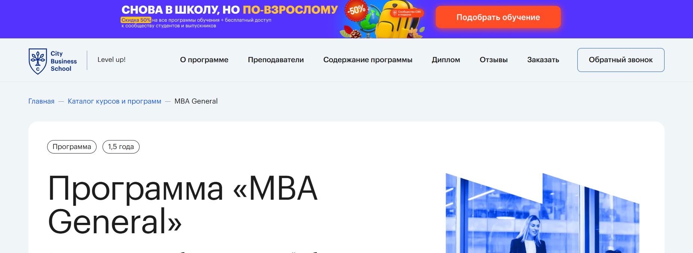- ✅ Официальный сайт: e-mba.ru
- 💸 Цена обучения: 298 000 ₽ (со скидкой 50%).
- 💳 Рассрочка: до 24 месяцев, от 12 417 ₽/мес.
- 📚 Формат: дистанционный формат: видеолекции, практические кейсы, тестирование, итоговые задания.
- ⏳ Продолжительность: 1,5 года.
- 📜 Документ: российский диплом о дополнительном профессиональном образовании (с внесением в ФИС ФРДО) + международный диплом MBA.
- 📝 Трудоустройство: повышение шансов на карьерный рост, выпускники получают новые управленческие позиции и увеличивают доход в среднем на 62% уже в процессе прохождения программы.
- 🔷 Для кого подходит курс: специалисты, менеджеры среднего звена, руководители топ-уровня, собственники бизнеса.
Особенности:
Программа сочетает теоретические знания и практический опыт, позволяя освоить управленческие компетенции на высоком уровне. Дистанционный формат обучения делает процесс гибким и доступным в любом удобном графике. Слушатели развивают навыки стратегического планирования, финансового анализа и эффективного руководства. Образовательная платформа построена на интерактивных заданиях, что позволяет закрепить материал на практике. Студенты учатся принимать стратегические решения, управлять рисками и оптимизировать бизнес-процессы. Особое внимание уделяется развитию лидерских качеств и формированию эффективных команд. После успешного завершения курса слушателям выдаются официальные дипломы, которые признаются как в России, так и за рубежом.
Чему учатся студенты:
- Лидерству и формированию команд
- Стратегическому менеджменту и планированию
- Финансовому менеджменту и анализу
- Управлению проектами и изменениями
- Маркетингу, продажам и HR-практикам
- Цифровым технологиям и инновациям в бизнесе
Преподаватели:
- Александр Павлов — тренер и автор мастер-классов по управлению проектами
- Оксана Семёновских — бизнес-консультант MBA, ACC ICF в «Лаборатории лидерства»
- Елена Корчуганова — HR-эксперт, сертифицированный коуч ICF
- Лон Сафко — инноватор, изобретатель, автор бестселлера
Преимущества:
- Дистанционное обучение с гибким графиком
- Официальные дипломы российского и международного образца
- Рассрочка на 24 месяца и налоговый вычет 13%
- Кейсы от практикующих экспертов и реальных компаний
- Повышение дохода и карьерный рост уже в процессе курса
- Возможность выбрать дополнительные специализации
- Гарантия возврата средств в течение 3 дней
Отзывы учеников:
Выпускники отмечают удобный дистанционный формат, качественный учебный процесс и практическую направленность занятий. Большинство подчеркивают рост управленческих навыков и уверенность в принятии решений. Положительные отзывы касаются повышения квалификации и карьерных перспектив после успешного завершения программы.
Перейти на официальный сайт курса12. Лидер 360° — Нетология
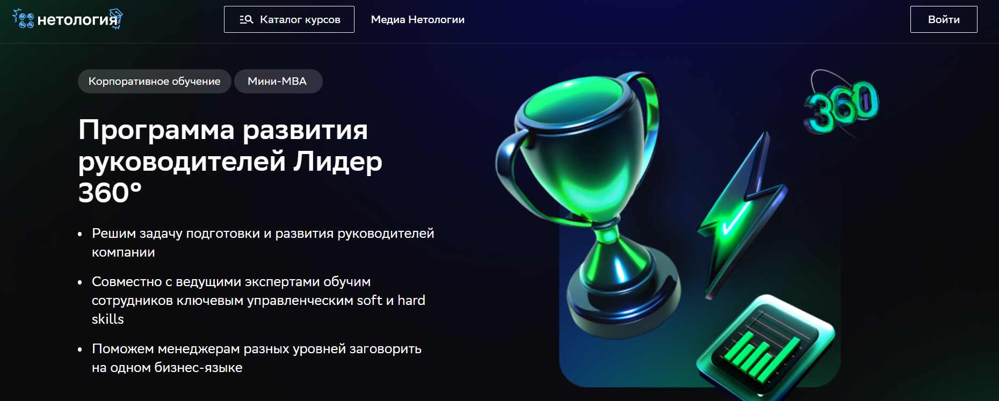- ✅ Официальный сайт: netology.ru
- 💸 Цена: уточняется индивидуально для компании.
- 💳 Рассрочка: возможна по запросу.
- 📚 Формат: видеолекции, тренажёры, квизы, домашние задания с обратной связью, Q&A-сессии, онлайн-встречи с экспертами.
- ⏳ Продолжительность: доступ к материалам до 12 месяцев, при размещении на LMS компании — бессрочно.
- 📜 Документ: диплом о профессиональной переподготовке установленного образца.
- 📝 Трудоустройство: курс ориентирован на повышение квалификации сотрудников и их подготовку к управленческим должностям.
- 🔷 Для кого подходит курс: начинающие и опытные руководители, топ-менеджеры, амбициозные сотрудники, собственники бизнеса.
Особенности:
Программа создана для развития управленческих компетенций в дистанционном формате. Обучение включает гибкие форматы, практические задания и реальные кейсы от экспертов рынка. Участники смогут освоить стратегическому менеджменту и финансовому планированию, повысить квалификацию и закрепить навыки эффективного руководства. Все занятия адаптируются под задачи компании, а обучение проходит с применением SCORM-модулей. После успешного завершения курса выдается диплом, подтверждающий профессиональную переподготовку. Обучение проводится с использованием современных методов и инструментов менеджмента, что позволяет повысить эффективность бизнеса и управленческих процессов.
Чему учатся студенты:
- Эффективному управлению командами и проектами
- Принятию стратегических решений и разработке бизнес-стратегий
- Финансовому менеджменту и анализу показателей
- Стратегическому планированию и постановке целей
- Развитию управленческих навыков и компетенций руководителя
- Работе с практическими кейсами и симуляцией реальных бизнес-ситуаций
Преподаватели:
- Сергей Дунаев — Генеральный директор «Северсталь-инфоком»
- Наталья Цветкова — профессор, руководитель Психологической службы МПГУ
- Анна Львова — директор по персоналу «Севергрупп»
- Директор по правовым вопросам TalentTech
Преимущества:
- Гибкий учебный процесс в удобном формате
- Возможность изучать материалы курса в любом удобном месте и времени
- Практические задания и реальные кейсы из бизнеса
- Индивидуальная адаптация программы под задачи компании
- Выдается официальный диплом о переподготовке
- Преподаватели — практики и руководители крупных компаний
Отзывы учеников:
Студенты отмечают удобный формат дистанционного обучения, практическую направленность материалов и высокий уровень преподавателей. Многие подчеркивают ценность практических кейсов и гибкость программы, позволяющую совмещать обучение с работой.
Перейти на официальный сайт курса13. Начинающий руководитель. Старт карьеры – Нетология
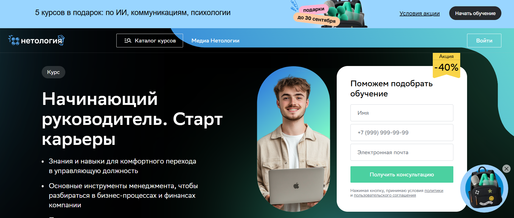
- ✅ Официальный сайт: netology.ru
- 💸 Цена: от 30 300 ₽ (со скидкой 40%)
- 💳 Рассрочка: от 2 659 ₽/мес до 24 месяцев без переплат
- 📚 Формат: 3 видеолекции в неделю, вебинары в прямом эфире, практические задания, тесты, квизы
- ⏳ Продолжительность: 1–3 месяца в зависимости от тарифа
- 📜 Документ: удостоверение о повышении квалификации или свидетельство о прохождении курса
- 📝 Трудоустройство: помощь в построении карьерного плана, участие в профессиональном сообществе
- 🔷 Для кого подходит курс: начинающие руководители, специалисты, которые хотят занять управленческую позицию, предприниматели и стартаперы
Особенности:
Программа обучения проходит в дистанционном формате, что делает учебный процесс доступным в любом удобном месте и времени. Курс помогает развить управленческие компетенции, освоить стратегические подходы к планированию и финансовому менеджменту. Слушатели получают практические навыки эффективного управления командой, учатся принимать ключевые решения и анализировать результаты бизнеса. Программа включает современные методы управления проектами и персоналом, уделяет внимание финансовому анализу и планированию. Выпускники получают официальный документ установленного образца, подтверждающий квалификацию. Обучение проходит в удобном формате с возможностью совмещать его с работой. Преподавателями выступают практикующие топ-менеджеры крупных компаний, что гарантирует прикладной подход. Выпускники могут присоединиться к профессиональному сообществу управленцев и обмениваться опытом.
Чему учатся студенты:
- Налаживать коммуникацию и проводить совещания
- Управлять финансами: расчёт P&L, Cashflow, финансовое планирование
- Формировать сильные команды и делегировать задачи
- Устанавливать цели и метрики, описывать бизнес-процессы
- Анализировать отраслевые тренды и стратегические изменения
- Применять инструменты тайм-менеджмента и Excel для оптимизации работы
- Использовать нейросети для управления задачами и процессами
Преподаватели:
- Елена Гордей — директор по персоналу МГТС, консультант по организационному и карьерному развитию
- Вячеслав Макович — руководитель диджитал-агентства UNC Media, сооснователь инвестиционной компании AAA Trust
- Алексей Сидорюк — директор по развитию АНО «Цифровая экономика», управляющий директор по операционной эффективности ООО «ЛокоТех»
Преимущества:
- Официальный документ о повышении квалификации
- Современные форматы обучения и дистанционный доступ к материалам
- Гибкие условия оплаты и рассрочка без переплат
- Возможность совмещать обучение с работой
- Преподаватели с управленческим опытом в крупных компаниях
- Поддержка карьерного развития и участие в комьюнити управленцев
- Практические задания и работа с реальными кейсами
Отзывы учеников:
Студенты отмечают удобный формат обучения и доступность материалов. Чаще всего выделяют практическую направленность, грамотное объяснение сложных тем и поддержку преподавателей. Многие выпускники подчеркивают, что программа помогла систематизировать знания, повысить уверенность в новой роли и разработать план карьерного роста.
Перейти на официальный сайт курса14. Эффективный руководитель – Skillbox
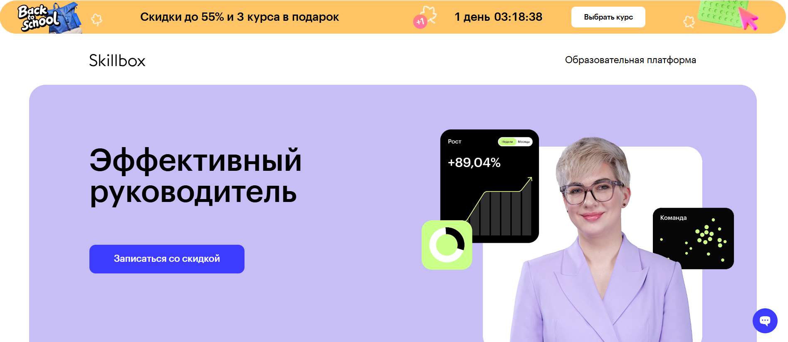- ✅ Официальный сайт: skillbox.ru
- 💸 Цена обучения: 153 470 ₽/мес (со скидкой 45%).
- 💳 Рассрочка: доступна от 4 263 ₽/мес на 36 месяцев без переплаты.
- 📚 Формат: дистанционное обучение: видеолекции, практические задания, тесты, проекты и обратная связь от кураторов.
- ⏳ Продолжительность: 6 месяцев интенсивной подготовки.
- 📜 Документ: выдается диплом о профессиональной переподготовке установленного образца.
- 📝 Трудоустройство: помощь в поиске вакансий, доступ к карьерному центру, сопровождение до первого места работы.
- 🔷 Для кого подходит курс: будущие руководители, действующие менеджеры, собственники бизнеса.
Особенности:
Программа позволяет освоить управленческие компетенции в дистанционном формате, что особенно удобно для тех, кто совмещает обучение с работой. Включает реальные кейсы и практические задания, благодаря которым слушатели получают прикладные навыки. После успешного завершения курса выпускники получают официальный диплом, подтверждающий квалификацию. Поддержка кураторов и практикующих экспертов обеспечивает качественную обратную связь. Учебный процесс адаптирован для разных уровней подготовки, что позволяет начинающим и опытным специалистам найти свой формат обучения. Студенты учатся применять методы анализа данных, стратегического планирования и эффективного управления персоналом. Участники курса могут использовать полученные знания в компаниях разных сфер, включая IT, ритейл и финансы.
Чему учатся студенты:
- Определять цели и задачи бизнеса и проверять гипотезы
- Анализировать данные и принимать стратегические решения
- Управлять командой в офисе и дистанционно
- Выстраивать операционные процессы и снижать издержки
- Грамотно презентовать проекты и аргументировать идеи
- Создавать презентации с использованием PowerPoint и Keynote
Преподаватели:
- Рустам Муртазин — директор департамента кадрового консалтинга «Альянс Консалтинг»
- Ксения Понька — директор по бренд-коммуникациям Mercury
- Николай Чернов — директор по управлению департаментом визуальных коммуникаций Rambler Group
- Николай Шестаков — основатель performance-агентства Adventum, акционер YouDo.com
- Елена Полякова — тренер для спикеров TEDxSR
- Александр Богачёв — основатель Data Storytellers, автор книги о визуализации данных
- Вадим Шестаков — Head of Product Analytics в Adventum
- Вадим Михалёв — CEO в Rocketslides и Codesign.io
- Максим Калюжный — партнёр и сооснователь CPG Invest
Преимущества:
- Полностью дистанционный формат обучения
- Рассрочка до 36 месяцев без переплаты
- Поддержка кураторов и экспертов рынка
- Портфолио из реальных практических кейсов
- Карьерная поддержка и помощь в трудоустройстве
- Доступ к материалам курса навсегда
- Сообщество руководителей для обмена опытом
Отзывы учеников:
Выпускники отмечают удобный формат дистанционного образования, грамотную организацию учебного процесса и качественную обратную связь от кураторов. Часто подчеркивают практическую направленность заданий и актуальность знаний для реальной работы. Многие студенты довольны тем, что после прохождения курса удалось быстро найти работу или повысить квалификацию.
Перейти на официальный сайт курса15. Директор по стратегическому развитию (620 часов) — АНО «НИИДПО»
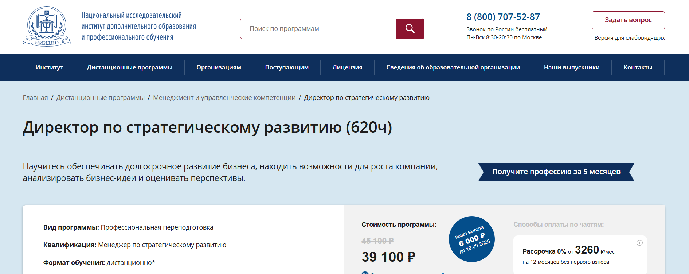- ✅ Официальный сайт: niidpo.ru
- 💸 Цена: 45 100 ₽, со скидкой 39 100 ₽.
- 💳 Рассрочка: 0% на 12 месяцев от 3 260 ₽/мес., без первого взноса, доступна оплата через Яндекс PAY.
- 📚 Формат: дистанционный формат, онлайн-курсы, практические задания, тестирование, вебинары, доступ к архиву лекций.
- ⏳ Продолжительность: 23 недели (5,5 месяцев).
- 📜 Документ: диплом о профессиональной переподготовке установленного образца.
- 📝 Трудоустройство: выпускники получают профессию с возможностью работы стратегическим менеджером, коммерческим директором, Business Development Manager.
- 🔷 Для кого подходит курс: для генеральных директоров, менеджеров, специалистов в области стратегического планирования и тех, кто планирует карьерный рост.
Особенности:
Программа ориентирована на освоение стратегического менеджмента в дистанционном обучении, что дает возможность совмещать учебу с работой. Студенты проходят полный цикл профессиональной переподготовки, осваивают навыки эффективного управления и финансового планирования. При успешном завершении курса выдается диплом, который принимается работодателями по всей России. Учебный процесс построен на практических кейсах и заданиях, позволяющих развить управленческие компетенции. Удобный формат позволяет учиться в любом удобном графике, включая мобильное приложение. При оплате студент получает доступ к архиву вебинаров и бессрочным учебным материалам. Выпускники отмечают, что после окончания обучения они уверенно принимают ключевые стратегические решения и получают конкурентное преимущество на рынке труда.
Чему учатся студенты:
- Разрабатывать стратегические планы и миссии компании
- Оценивать конкурентоспособность бизнеса и проводить финансовый анализ
- Применять методы стратегического планирования и корпоративного управления
- Создавать бизнес-планы и управлять рисками
- Повышать эффективность бизнес-процессов
- Развивать управленческие навыки и формировать эффективные стратегии
Преподаватели:
- Гладнева Светлана Геннадьевна — кандидат педагогических наук, доцент, методист в сфере общего и высшего образования
- Иванова Ирина Алексеевна — кандидат экономических наук, доцент ВАК, специалист в области экономики
- Кисурина Наталия Александровна — кандидат технических наук, преподаватель в сфере маркетинга
Преимущества:
- Дистанционное образование в удобном формате
- Выдается официальный диплом установленного образца
- Возможность совмещать учебу с работой
- Программа учитывает требования профессиональных стандартов
- Доступ к архиву 13 000+ вебинаров и учебных материалов
- Оплата обучения в рассрочку без переплаты
- Практические кейсы и задания для закрепления навыков
Отзывы учеников:
Студенты чаще всего отмечают удобный дистанционный формат, доступность материалов и высокий профессионализм преподавателей. Подчеркивают ценность практических заданий, возможность совмещать прохождение курса с работой и быстрый рост управленческих компетенций после завершения программы.
Перейти на официальный сайт курса16. Директор по стратегическому развитию — Московский институт профессионального образования
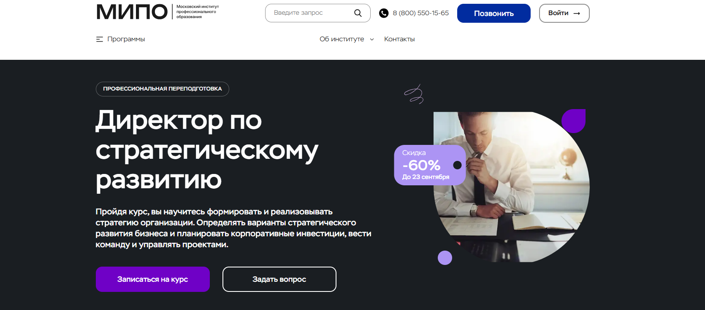- ✅ Официальный сайт: mipo.msk.ru
- 💸 Цена обучения: 34 600 ₽ (со скидкой 60%, полная стоимость — 86 500 ₽).
- 💳 Рассрочка: до 24 месяцев, от 1 442 ₽/мес, без процентов.
- 📚 Формат: дистанционный формат: онлайн-вебинары, записи лекций, практические задания, тесты, кейсы, обратная связь с кураторами.
- ⏳ Продолжительность: 8 месяцев, 690 часов.
- 📜 Документ: диплом о профессиональной переподготовке, внесение данных в ФИС-ФРДО.
- 📝 Трудоустройство: выпускники отмечают рост дохода и переход в престижные компании.
- 🔷 Для кого подходит курс: руководители, топ-менеджеры, специалисты, планирующие карьерный рост и развитие управленческих компетенций.
Особенности:
Программа создана для специалистов, которые стремятся освоить стратегическое управление и применять эффективные стратегии в бизнесе. Обучение проходит полностью в дистанционном формате, что позволяет совмещать процесс обучения с работой. Студенты получают доступ к онлайн-курсам, материалам курса и практическим кейсам. Каждому слушателю помогает куратор, сопровождающий до успешного завершения программы. По итогам прохождения курса выдается официальный диплом установленного образца. Выпускники осваивают навыки эффективного руководства, стратегического планирования и управления рисками. Образовательная платформа включает современные методы управления и форматы обучения, что обеспечивает развитие профессиональных компетенций слушателей.
Чему учатся студенты:
- Разрабатывать стратегические цели и планы компании
- Анализировать конкурентоспособность и финансовые стратегии
- Повышать эффективность бизнес-процессов и управлять командой
- Оценивать риски и принимать управленческие решения
- Составлять бизнес-планы и проводить маркетинговый анализ
- Осваивать методы стратегического и финансового планирования
Преподаватели:
- Карпухин Александр — руководитель проектов аналитических систем для государства и бизнеса, эксперт РАН и МИД России
- Шам Ангелина — кандидат наук, бизнес-психолог, спикер Global Speakers Federation
- Зеленская Татьяна — бизнес-консультант, более 15 лет работы с ТОП-менеджерами банков
- Васильева Елена — генеральный директор аудиторских компаний «Форос Аудит» и «Биллион»
- Скрипачева Елена — эксперт в управлении продажами, автор методических пособий и книг
- Лебедев Александр — бизнес-трекер и консультант в сфере IT и телеком
Преимущества:
- Дистанционное обучение с удобным графиком
- Диплом о профессиональной переподготовке, котируемый в России и за рубежом
- Обучение проводят эксперты с международным опытом
- Возможность совмещения учебного процесса с работой
- Актуальные образовательные программы, обновляемые по запросу рынка
- Беспроцентная рассрочка и доступная стоимость обучения
Отзывы учеников:
Студенты отмечают удобный дистанционный формат, практические задания и поддержку кураторов. Многие выпускники подчеркивают рост квалификации, карьерные перспективы и возможность совмещать обучение с работой. Среди плюсов — доступность онлайн-лекций в любое время, качественная обратная связь и официальный диплом установленного образца.
Перейти на официальный сайт курса17. Директор (Генеральный директор) — Учебный центр «НЦПО»

- ✅ Официальный сайт: ncpo.ru
- 💸 Цена: от 3 900 ₽ (скидка 1 850 ₽ при оплате в день заказа).
- 💳 Рассрочка: 0% на 3, 6 или 12 месяцев, платежи от 325 ₽.
- 📚 Формат: дистанционный формат, онлайн курсы, доступ к учебным материалам 24/7, практические задания, тестирование без ограничений.
- ⏳ Продолжительность: от 36 до 250 академических часов.
- 📜 Документ: удостоверение о повышении квалификации, внесение данных в госреестр ФИС ФРДО.
- 📝 Трудоустройство: подтверждает профессиональные компетенции, помогает повысить шансы на карьерный рост и повышение зарплаты.
- 🔷 Для кого подходит курс: для специалистов с высшим или средним профессиональным образованием, действующих руководителей и сотрудников, планирующих управленческую позицию.
Особенности:
Программа создана для тех, кто хочет освоить навыки эффективного руководителя и укрепить управленческие компетенции. Обучение проводится в дистанционном формате, что позволяет совмещать учебный процесс с работой. После успешного прохождения обучения слушателям выдается официальный документ установленного образца. Все материалы курса остаются доступными бессрочно, что дает возможность вернуться к теоретическим знаниям и практическим кейсам в любое время. Продолжительность обучения зависит от выбранного формата и может составлять от нескольких недель до нескольких месяцев. Слушатели получают актуальные знания по стратегическому управлению, финансовому планированию и развитию бизнеса. При успешном завершении программы выпускники получают юридические гарантии и подтверждение квалификации в системе ФИС ФРДО. Такой удобный формат обучения подойдет как действующим руководителям, так и тем, кто только планирует карьеру в управлении.
Чему учатся студенты:
- Развивать управленческие навыки и принимать стратегические решения
- Осваивать основы финансового планирования и анализа финансовых результатов
- Формировать эффективные стратегии развития бизнеса
- Управлять командой и строить процессы для повышения эффективности
- Применять современные методы управления и стратегического планирования
Преподаватели:
- Терешков Александр Леонидович — генеральный директор УЦ «НЦПО»
- Грезнева Диана — преподаватель учебного центра
- Малкова Анна — преподаватель учебного центра
Преимущества:
- Обучение проводится официально по лицензии Министерства образования
- Срочная выдача удостоверения — через 1 день после окончания курса
- Бессрочный доступ к учебным материалам на онлайн-платформе
- Дистанционный формат позволяет учиться в удобное время и месте
- Все документы регистрируются в федеральном реестре ФИС ФРДО
- Возможность индивидуального подбора программы и сроков обучения
Отзывы учеников:
Слушатели отмечают удобный формат дистанционного обучения и простоту прохождения курса. Часто подчеркивают быструю выдачу документов и официальное подтверждение квалификации. Положительно оцениваются профессионализм преподавателей и доступность учебных материалов. Многие студенты указывают, что программа помогла им повысить квалификацию, получить прибавку к зарплате и выйти на новые управленческие позиции.
Перейти на официальный сайт курсаБесплатные курсы по обучению на Генерального директора
Бизнес-стратегия: практикум для предпринимателей, бесплатно – Skillbox
✅ Официальный сайт: live.skillbox.ruОписание и особенности:
- Вебинар помогает предпринимателям освоить ключевые аспекты стратегического менеджмента и финансового планирования.
- Занятие проходит в дистанционном формате, что удобно для слушателей с любым графиком.
- Участники узнают, как разрабатывать эффективные стратегии для роста бизнеса и принимать управленческие решения.
- Курс ведёт Кирилл Фомичев — серийный предприниматель и эксперт по маркетингу.
- Обучение включает примеры из практики, разбор реальных бизнес-кейсов и советы по повышению квалификации руководителей.
- Слушатели освоят навыки стратегического планирования, управления рисками и анализа финансовых результатов.
- Доступ к трансляции возможен онлайн, при этом формат обучения позволяет совмещать процесс с работой.
- По успешном завершении участники закрепят практические навыки и смогут применять их в своём бизнесе.
- Обучение проводится бесплатно, регистрация открыта на официальном сайте Skillbox.
Эффективное делегирование, бесплатно – GeekBrains
✅ Официальный сайт: gb.ruОписание и особенности:
- Программа состоит из 14 уроков и проходит в дистанционном формате, что позволяет учиться в любом удобном графике.
- Участники освоят навыки эффективного управления и научатся правильно распределять задачи между сотрудниками.
- Курс помогает сформировать практические навыки делегирования и развить управленческие компетенции.
- Занятия включают изучение мифов о делегировании, пошаговые инструкции и методы повышения квалификации руководителя.
- В процессе обучения слушатели узнают о стратегических решениях, инструментах менеджмента и организации обратной связи.
- Особое внимание уделено найму ассистента и применению делегирования для роста компании.
- Обучение проходит онлайн, материалы курса доступны бесплатно и не требуют дополнительных оплат.
- После успешного прохождения программы выпускники смогут применять полученные знания в бизнесе и управлении персоналом.
- Курс будет полезен руководителям, генеральным директорам и тем, кто хочет повысить уровень управленческих навыков.
Вводный курс MBA, бесплатно – City Business School
✅ Официальный сайт: vvodniy.e-mba.ruОписание и особенности:
- Программа создана для собственников, руководителей и специалистов, которые хотят ускорить карьерный рост.
- Участники пройдут оценку компетенций и составят личный план профессионального развития.
- Курс проводится в дистанционном формате, доступ открывается сразу после регистрации.
- Длительность обучения – 4 часа, при этом доступен в любое удобное время.
- Включает практические кейсы, тестирование и разбор реальных управленческих задач.
- Слушатели научатся выявлять сильные и слабые стороны, а также определять зоны роста.
- Обучение бесплатно и завершается выдачей сертификата, подтверждающего освоение программы.
- После успешного прохождения курса можно перейти к более глубоким программам повышения квалификации и профессиональной переподготовки.
- Программа соответствует национальным и международным образовательным стандартам.
- Выпускники применят полученные знания для развития бизнеса и повышения управленческих компетенций.
Кто такой генеральный директор?
Генеральный директор (CEO, Chief Executive Officer) — это ключевая управленческая фигура в любой организации. Он отвечает за стратегическое развитие компании, принятие глобальных решений и контроль за их реализацией. Генеральный директор — лицо компании, которое несет ответственность перед собственниками, инвесторами и обществом.
Что делают генеральные директора и чем занимаются?
Работа CEO выходит далеко за рамки повседневных управленческих задач. Основные обязанности включают:
- Разработка и внедрение стратегии компании.
- Управление финансовыми потоками и контроль бюджета.
- Формирование корпоративной культуры и HR-политики.
- Переговоры с ключевыми партнерами и инвесторами.
- Принятие решений по запуску новых продуктов и проектов.
- Оценка рисков и поиск путей их минимизации.
Генеральный директор отвечает не только за успех, но и за репутацию бизнеса на рынке.
Что должен знать и уметь CEO?
Чтобы успешно управлять компанией, CEO должен обладать обширными знаниями и навыками:
- Финансовая грамотность — понимание бухгалтерии, инвестиций, бюджетирования.
- Лидерские качества — умение вдохновлять команду и вести ее к целям.
- Стратегическое мышление — способность видеть перспективу и прогнозировать риски.
- Коммуникабельность — ведение переговоров на высоком уровне.
- Гибкость — адаптация к изменениям рынка и технологий.
Востребованность и зарплаты генеральных директоров в России
По состоянию на 2025 год, профессия генерального директора остается одной из самых престижных и высокооплачиваемых в России. Востребованность CEO особенно велика в IT, промышленности, финансовом секторе и e-commerce.
Средние зарплаты:
- В малом бизнесе — от 150 000 до 300 000 рублей.
- В средних компаниях — от 300 000 до 700 000 рублей.
- В крупных корпорациях — от 1 000 000 рублей и выше.
Дополнительно руководители получают бонусы, опционы на акции и другие мотивационные пакеты.
Как стать CEO и где учиться?
Генеральным директором не становятся сразу — к этой должности приходят через годы опыта. Основные шаги:
- Получить профильное образование (экономика, управление, юриспруденция, маркетинг).
- Пройти дополнительные программы MBA или Executive MBA.
- Набраться опыта на руководящих позициях среднего уровня.
- Развивать soft skills: лидерство, стрессоустойчивость, управление временем.
Плюсы и минусы профессии генерального директора (CEO)
Как и любая профессия, должность CEO имеет свои преимущества и недостатки:
- Плюсы: высокий доход, статус, возможность влиять на развитие компании и отрасли.
- Минусы: высокий уровень стресса, огромная ответственность, ненормированный график.
Будущее профессии генерального директора
сейчас и в дальнейшем роль генерального директора трансформируется. На первый план выходят цифровые навыки, управление удаленными командами, внедрение искусственного интеллекта в бизнес-процессы. Современный CEO должен уметь совмещать традиционное управление с инновационными технологиями.
Заключение
Генеральный директор — это больше, чем руководитель. Это стратег, лидер и визионер, от которого зависит успех компании. Востребованность CEO в России и мире будет только расти, а значит, профессия остается перспективной для тех, кто готов брать на себя ответственность и стремится к лидерству.
Что включает обучение для руководителей на генерального директора?
Обучение на генерального директора включает профессиональную переподготовку, программы повышения квалификации, изучение стратегического менеджмента, финансового планирования, корпоративного управления и развитие управленческих компетенций. В процессе студенты получают как теоретические знания, так и практические навыки, необходимые для роли эффективного руководителя в современном бизнесе.
Кому подходит программа профессиональной переподготовки на CEO?
Программа переподготовки генеральных директоров подходит руководителям высшего звена, собственникам компаний, финансовым директорам, коммерческим директорам, а также менеджерам, которые стремятся к получению новой квалификации и развитию компетенций руководителя. Также программа будет полезна предпринимателям, которые хотят повысить эффективность бизнеса.
Какие форматы обучения для генеральных директоров доступны?
Доступны разные форматы обучения: дистанционный формат, очные программы, смешанные варианты. Популярностью пользуется дистанционное обучение, так как это удобный формат, позволяющий совмещать прохождение обучения с работой. Онлайн курсы дают доступ к учебным материалам и практическим заданиям в любое время.
Какие навыки развивают дистанционные курсы для CEO?
Дистанционные курсы помогают освоить навыки эффективного управления, развить управленческие навыки, умение принимать стратегические решения, работать с финансовым анализом, контролировать эффективность бизнеса, управлять командой сотрудников и выстраивать эффективные стратегии роста компании.
Выдается ли диплом после успешного завершения обучения руководителей?
После успешного завершения программы обучения выдается официальный диплом о профессиональной переподготовке или повышении квалификации. Выпускники получают документы установленного образца, которые подтверждают их новую квалификацию и соответствие профессиональным стандартам.
Какие дисциплины изучаются в программе обучения генеральных директоров и реководителей?
Программа обычно включает такие дисциплины, как стратегическое планирование, финансовый менеджмент, корпоративное управление, операционный менеджмент, управление персоналом, финансовые стратегии, анализ финансовых рисков, стратегическое развитие бизнеса и изучение современных методов управления.
Какие преимущества дает дистанционное обучение CEO?
Дистанционное образование удобно тем, что обучение проводится в любом удобном формате, не требует отрыва от работы, позволяет учиться в полностью дистанционном режиме и получать доступ к дополнительным материалам и практическим кейсам. Слушатели получают все необходимые учебные материалы через образовательную платформу.
Сколько длится обучение на генерального директора?
Сроки обучения зависят от выбранной программы. Переподготовка генеральных директоров обычно занимает от 6 месяцев до 1,5 лет, а курсы повышения квалификации могут длиться от нескольких недель до 3–6 месяцев. Окончания курса сопровождается сдачей практических заданий и итоговой аттестацией.
Можно ли совмещать обучение для руководителей с работой?
Да, прохождение программы построено так, чтобы обучение проходило в удобном формате. Занятия проходят в дистанционном обучении, что позволяет совмещать профессиональную деятельность и развитие профессиональных компетенций.
Какие результаты получают выпускники программы переподготовки CEO?
Выпускники программы осваивают ключевые аспекты управления, приобретают практические навыки, учатся принимать стратегические решения и эффективно управлять командой. В итоге они становятся эффективными руководителями, которые умеют выстраивать финансовые стратегии и развивать эффективные системы управления бизнесом.
Какие документы получает слушатель по окончании обучения?
После окончания обучения слушателям выдается диплом или сертификат в зависимости от программы. Это официальный документ, подтверждающий прохождение дополнительного профессионального образования. Многие выпускники получают дипломы установленного образца, которые признаются на рынке труда.
Как проходит учебный процесс в дистанционном формате?
Учебный процесс строится на основе онлайн курсов, где занятия проходят в формате лекций, практических кейсов, проектных заданий и тестов. Слушатель получает доступ к образовательной платформе, где собраны материалы курса и дополнительные ресурсы для развития компетенций руководителя.
Сколько стоит обучение на генерального директора?
Стоимость обучения зависит от программы повышения квалификации или профессиональной переподготовки. Цены варьируются от 30–50 тысяч рублей за курсы повышения до 100–250 тысяч рублей за дистанционные курсы переподготовки. Также существуют бесплатные курсы, но они обычно дают только базовые теоретические знания и сертификаты.
Чем отличается переподготовка от курсов повышения квалификации для CEO?
Профессиональная переподготовка дает новую квалификацию и право занимать должность генерального директора. Курсы повышения квалификации помогают повысить уровень профессиональных компетенций, освоить современные методы управления и углубить управленческий опыт, но не меняют специальность.
Какие компетенции руководителя формируются в процессе обучения?
В процессе прохождения курса формируются управленческие компетенции, навыки стратегического планирования, финансового анализа, принятия управленческих решений, управления персоналом и построения эффективных команд. Студенты учатся принимать ключевые решения и управлять эффективностью бизнеса.
Где можно пройти обучение на генерального директора?
Обучение можно пройти в школах бизнеса, университетах, академиях дополнительного образования, а также на специализированных образовательных платформах, которые предлагают онлайн-курсы и дистанционные программы переподготовки. Обучение проводится как в очном обучении, так и в дистанционном формате.
------------------------------------------------
Реклама. Информация о рекламодателе по ссылкам в статье.